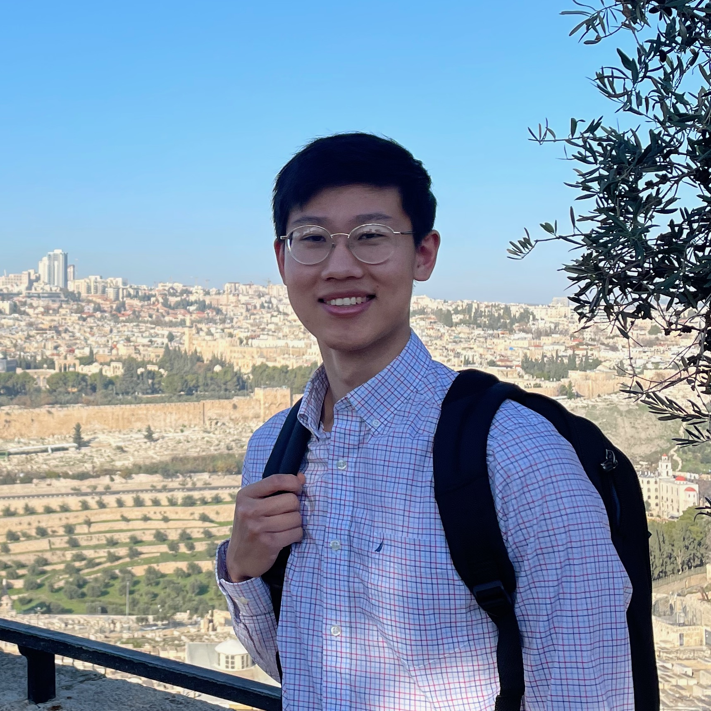

KEVIN WU

Hello, I'm Kevin. Thanks for visiting my website! I'm a third-year student at the University of Chicago, currently working towards a B.S. in Computational and Applied Mathematics and a B.A. in Economics spec. Data Science. I have a passion for mathematical problem solving and its applications to data science and software development. You can find my projects on this site and GitHub.
I have been building my own LEGO creations since I was three years old. Starting in 2017, I have been posting my models on Flickr. Since then, I have joined InnovaLUG, and my work has been featured in LEGOLAND Billund and the LEGO House. Check out my creations on this site and on YouTube, Flickr, and Instagram.
In my free time, I enjoy practicing Brazilian Jiu-Jitsu and playing guitar, soccer, and bastketball.
I have been building my own LEGO creations since I was three years old. Starting in 2017, I have been posting my models on Flickr. Since then, I have joined InnovaLUG, and my work has been featured in LEGOLAND Billund and the LEGO House. Check out my creations on this site and on YouTube, Flickr, and Instagram.
In my free time, I enjoy practicing Brazilian Jiu-Jitsu and playing guitar, soccer, and bastketball.
MY JOURNEY
Nov
2021
Student AI Researcher at UChicago Medicine
- Working in ZeD lab under UChicago Professor, Dr. Ishanu Chattopadhyay
- Use machine learning to predict wild mutation patterns for analyzing sequence divergence in novel pathogens
- Work with the Quasinet Python package, which infers structural dependencies in genomic sequences
Aug
2021
Closing Operations Intern at Weissman Law
- Fixed 1099 exception reports for year-end tax filing and maintained client lookup tables using SoftPro Select
- Sent and received clients' HELOC Release requests in the post-closing process using SoftPro 360
- End date: October 2021
Jun
2021
Researcher at UChicago Mathematics REU
- Wrote an expository paper on chip-firing and its use in proving the graph-theoretic analogue of Riemann-Roch
- Solved problems and attended lectures in combinatorics, projective geometry, and abstract algebra
- End date: August 2021
Oct
2020
Research Assistant at Becker Friedman Institute
- Chicago White Sox project: worked with a team to collect data for the creation of a new player database
- Lyft project: conducted phone surveys with paroled prisoners to report their access to transportation
- End date: June 2021
Sep
2020
Started College at University of Chicago
- GPA: 3.96/4.00
- B.S. Computational & Applied Mathematics
- B.A. Economics spec. Data Science
- Activities: UChicago Robotics, UChicago Brazilian Jiu-Jitsu, Derivatives Group Quantitative Trading, University Ministry of Christ Church
Oct
2019
Office Administrator at MediNinja USA (Gap Year)
- Increased sales by designing and implementing an email campaign using ActiveCampaign
- Contributed to migrating the website to Magento 2.0 using HTML and CSS
- Handled shipments, returns, device inspections, and customer inquiries
- End date: March 2020
May
2019
Graduated from Walton High School STEM Academy
- GPA: 4.67/4.00
- Activities: Math Team Vice President, Varsity Swim Team, Georgia Governor's Honors Program (2017), Georgia ARML Team
Aug
2017
Lifeguard at McCleskey East Cobb YMCA
- Enforced rules, cleaned pool deck, and tested pool chemicals to ensure safe environment
- End date: March 2020